Pilates.
Είναι στάση
ζωής.
Κίνηση με σκοπό. Φροντίδα με ουσία.
Ένα πρόγραμμα φτιαγμένο για εσένα,
με τον δικό σου ρυθμό.
Η ΦΙΛΟΣΟΦΙΑ ΜΑΣ
Το σώμα σου.
Η δική σου διαδρομή.
Δεν υπάρχουν δύο ίδια σώματα.
Γιατί να υπάρχουν δύο ίδια προγράμματα;
Στο Pilates by Tonia, ξεκινάμε από εσένα. Ακούμε τις ανάγκες σου, παρατηρούμε την κίνησή σου και προσαρμόζουμε κάθε άσκηση στις δυνατότητες και τους στόχους σου.
Από το 2009, δίνουμε έμφαση στην προσωπική καθοδήγηση και στη σωστή τεχνική. Για να μαθαίνεις το σώμα σου και να νιώθεις την εξέλιξη σε κάθε σου κίνηση.
Γνώρισε τη φιλοσοφία μαςΗ ΕΜΠΕΙΡΙΑ PILATES
Κάθε κίνηση
έχει σκοπό.
Ο σωστός εξοπλισμός συναντά την προσωπική καθοδήγηση. Εξερεύνησε μερικά από τα εργαλεία της δικής σου εξέλιξης.
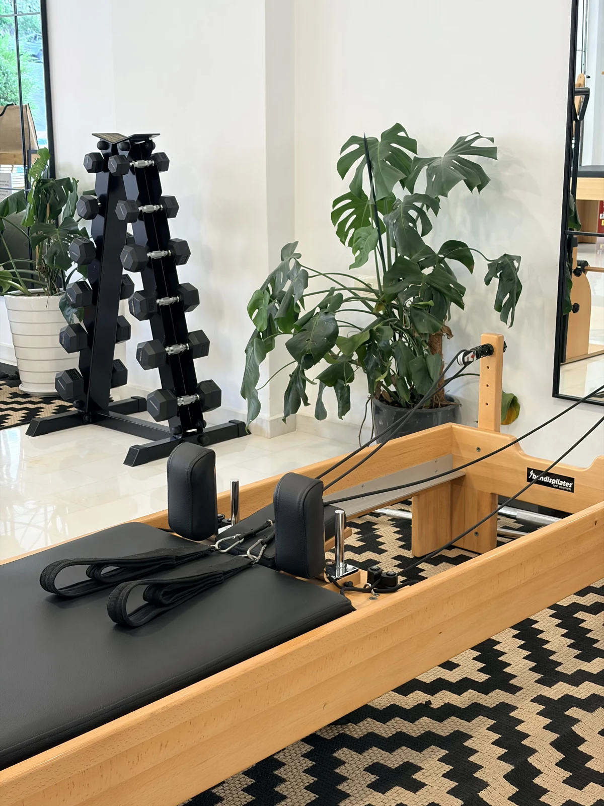
ΔΥΝΑΜΗ ΜΕ ΕΛΕΓΧΟ
Μικρές κινήσεις.
Ουσιαστική δουλειά.
Στο Reformer, η αντίσταση των ελατηρίων γίνεται εργαλείο για δύναμη, σταθερότητα και ρευστή κίνηση. Κάθε άσκηση και κάθε αντίσταση επιλέγεται σύμφωνα με τις δικές σου ανάγκες.
- Ενδυνάμωση σε βάθος
- Έλεγχος & συγκέντρωση
- Ισορροπία & κινητικότητα
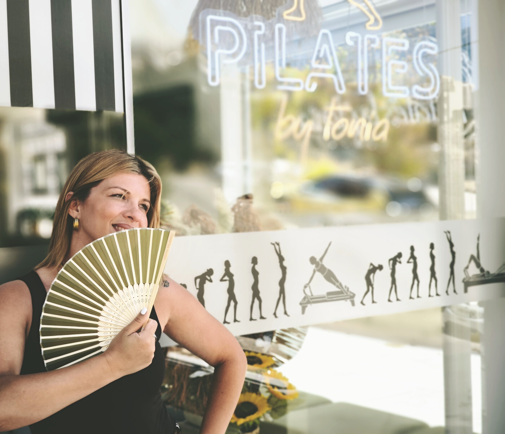
ΓΝΩΡΙΣΕ ΤΗΝ ΤΟΝΙΑ
«Η διαδρομή μου
έγινε η φιλοσοφία
μου.»
Από τον αθλητισμό στο Pilates.
Από την εμπειρία στη γνώση.
Ο αθλητισμός είναι κομμάτι της ζωής μου από μικρή. Μέσα από διακρίσεις, προκλήσεις και τραυματισμούς, έμαθα την αξία της προσπάθειας και τη σημασία της σωστής καθοδήγησης.
Σήμερα, αυτή η διαδρομή γίνεται ο τρόπος που δουλεύω μαζί σου: παρατηρώ, διορθώνω, προσαρμόζω. Γιατί πίσω από κάθε άσκηση υπάρχει ένας άνθρωπος με τη δική του ιστορία.
Μάθε περισσότερα για εμέναΟΙ ΥΠΗΡΕΣΙΕΣ ΜΑΣ
Κίνηση για κάθε
διαδρομή ζωής.
Όλοι οι Pilates instructors μας είναι πτυχιούχοι του Τμήματος Επιστήμης Φυσικής Αγωγής και Αθλητισμού (Τ.Ε.Φ.Α.Α.) Αθηνών, με ειδίκευση στη μέθοδο Pilates.
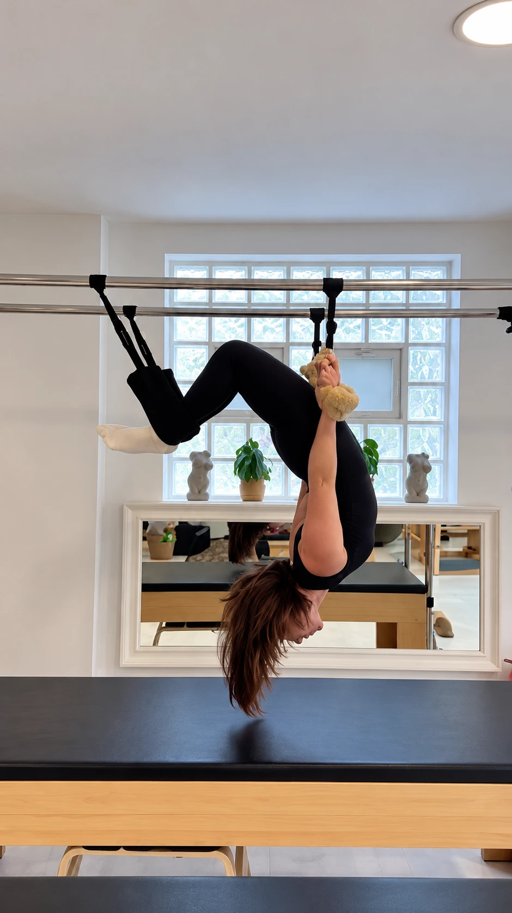
Εξατομικευμένη άσκηση
Ενδυνάμωση και προσωπική παρακολούθηση, από το δικό σου επίπεδο.
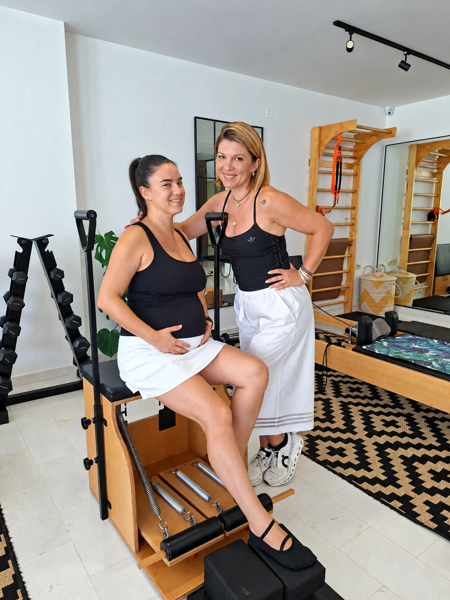
Εγκυμοσύνη & μετά τον τοκετό
Προσαρμοσμένη κίνηση και σταδιακή επιστροφή, με δυνατότητα παρουσίας του μωρού σου.
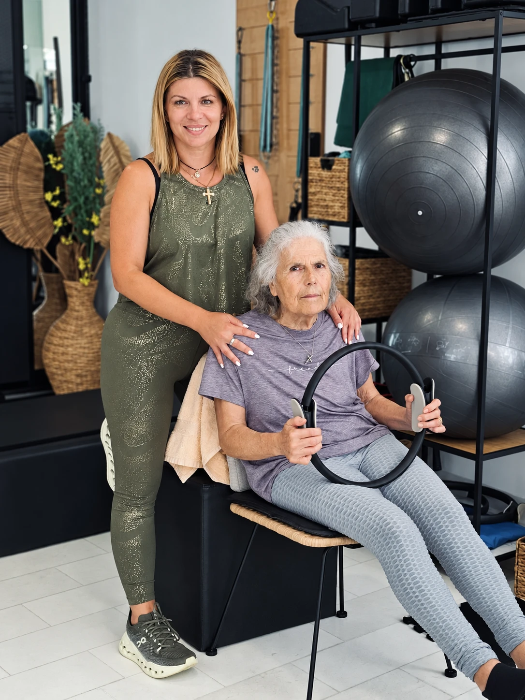
Άσκηση για μεγαλύτερες ηλικίες
Δύναμη, ισορροπία και καθημερινή αυτονομία.
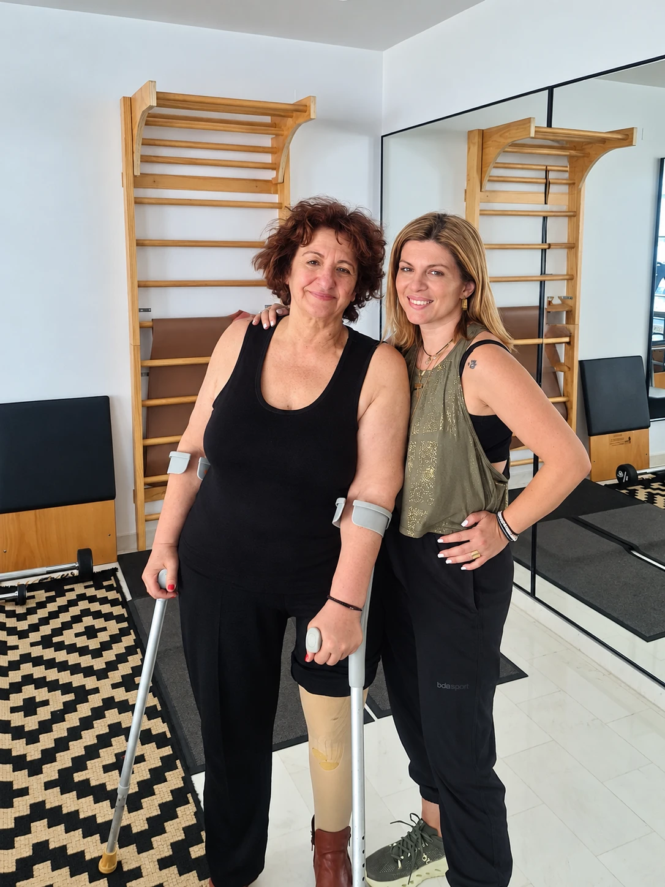
Άσκηση & αποκατάσταση
Μέση, αυχένας, χρόνιες παθήσεις και ιδιαίτερες κινητικές ανάγκες.
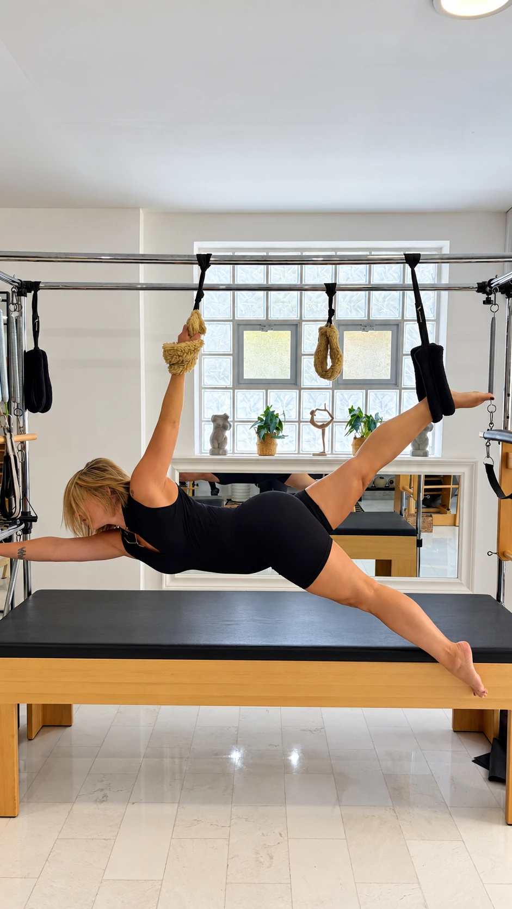
Anti-stress Pilates
Χρόνος για αναπνοή, συγκέντρωση και αποφόρτιση.
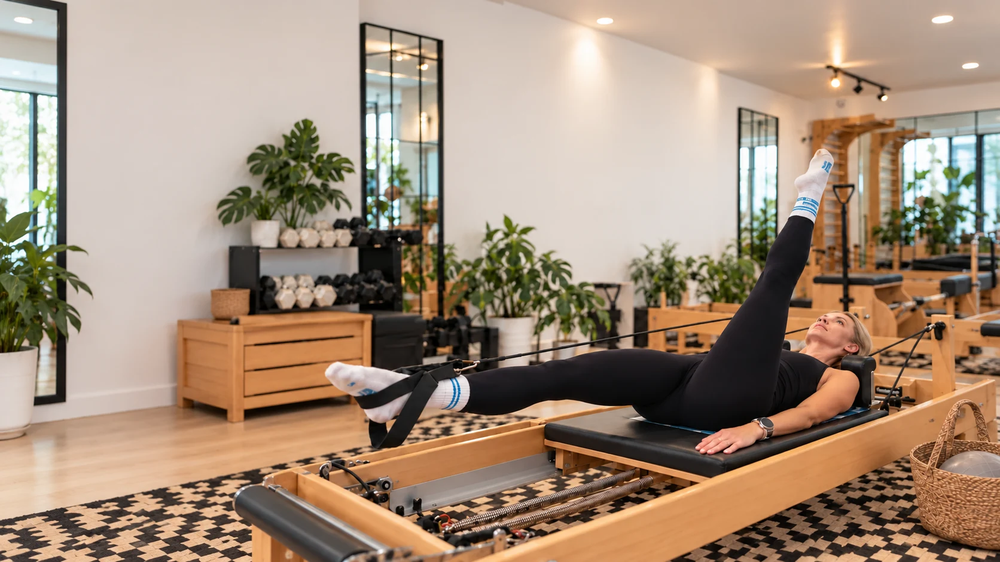
δική σου εξέλιξη.
Ο ΧΩΡΟΣ ΜΑΣ
Ένας χώρος για να
νιώθεις ο εαυτός σου.
Φως, προσεγμένος εξοπλισμός και μια ζεστή υποδοχή.
Ένα studio όπου μπορείς να αφήσεις την ένταση της ημέρας και να δώσεις χρόνο σε εσένα.
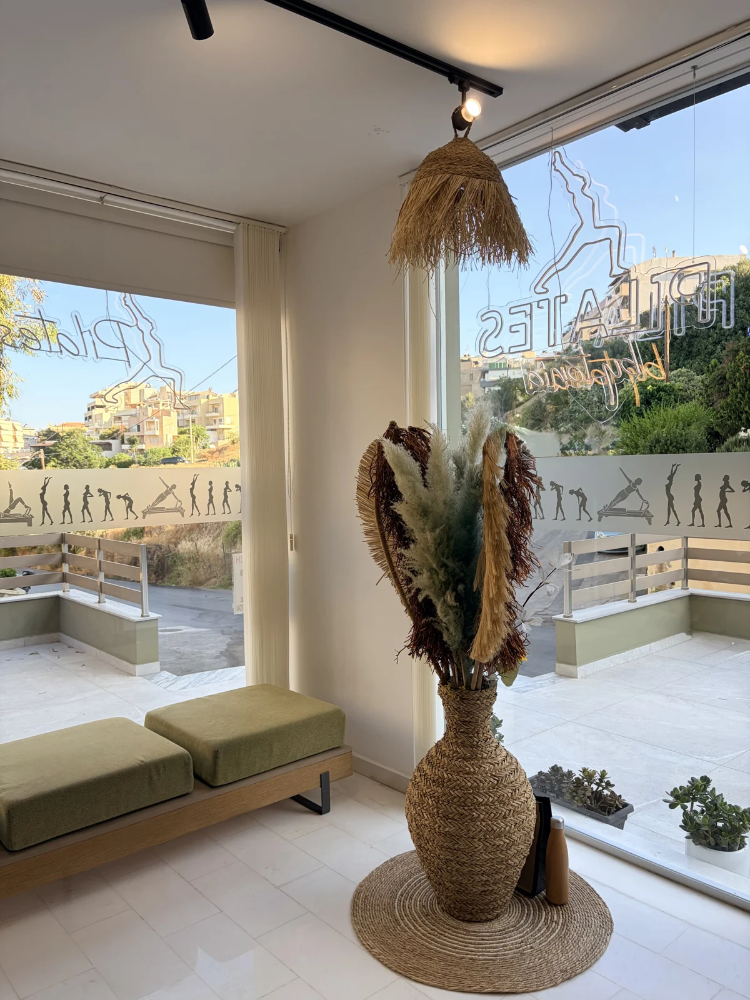
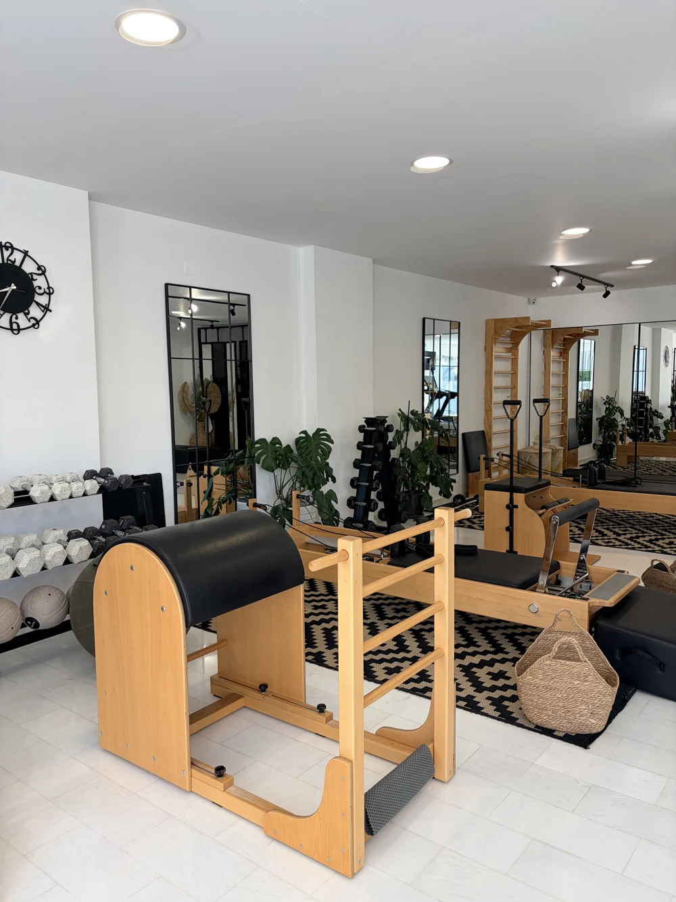
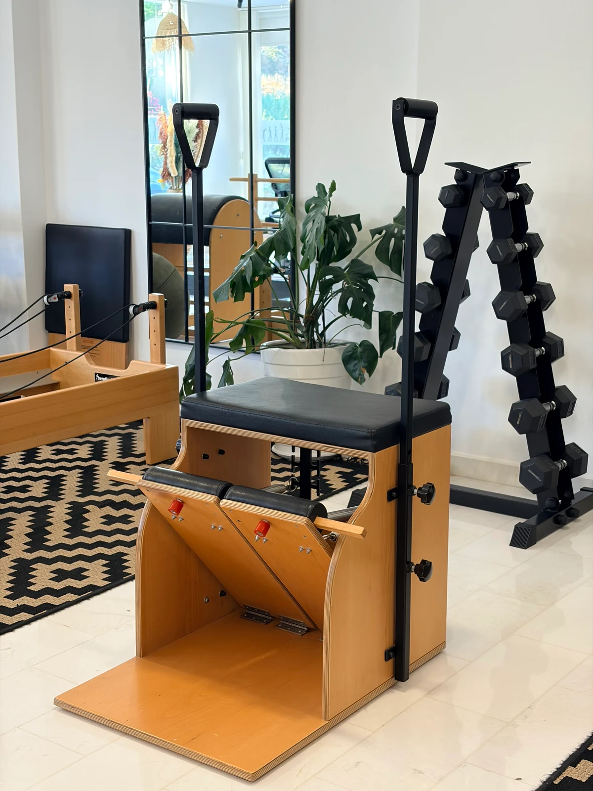
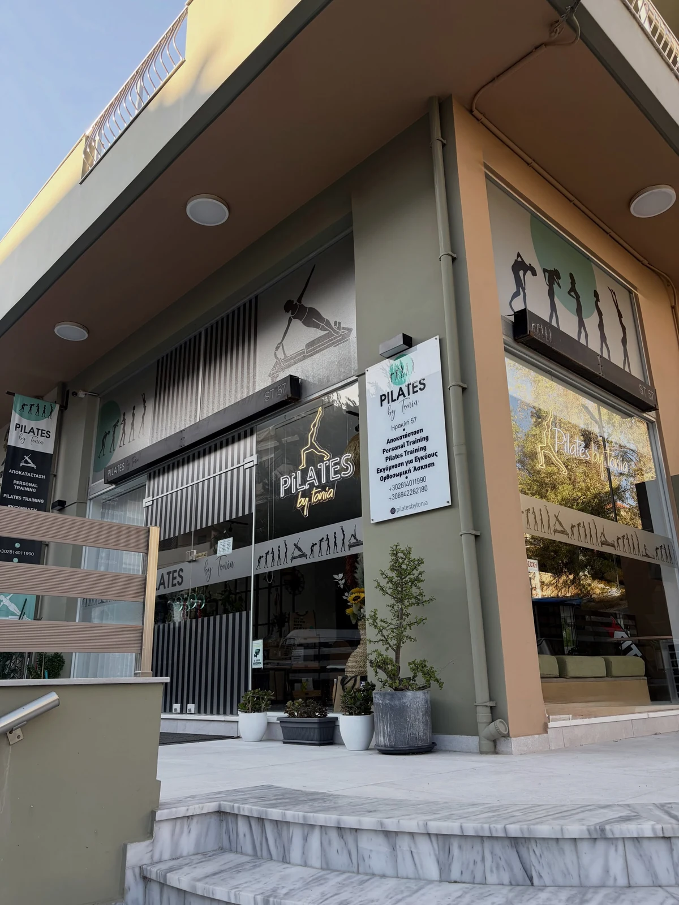
Η ΠΡΩΤΗ ΣΟΥ ΦΟΡΑ
Κάθε αρχή,
μια νέα δυνατότητα.
Το πρώτο δοκιμαστικό μάθημα είναι δωρεάν.
Γνώρισε τη μέθοδο, τον χώρο και τον τρόπο που δουλεύουμε, με ένα πρόγραμμα προσαρμοσμένο σε εσένα.
Κάλεσέ μας και κλείσε το δωρεάν δοκιμαστικό σουΔεν έχω γυμναστεί ποτέ. Μπορώ να ξεκινήσω;
Ναι. Δεν χρειάζεται να είσαι ήδη δυνατός ή ευλύγιστος. Ξεκινάμε από το δικό σου επίπεδο, με απλές κινήσεις και χρόνο για να τις μάθεις. Δουλεύουμε σταδιακά στη δύναμη, στην κινητικότητα και στην καλύτερη στάση του σώματος, χωρίς πίεση να ακολουθήσεις τον ρυθμό κάποιου άλλου.
Πώς γίνονται τα μαθήματα;
Δουλεύουμε σε small group personal: ένας Pilates instructor καθοδηγεί ένα μικρό τμήμα έως 5 ατόμων. Κάθε ασκούμενος έχει το δικό του ασκησιολόγιο, σύμφωνα με τις ανάγκες, τις δυνατότητες και τους στόχους του.
Πότε γίνεται μάθημα 1–1;
Σε ειδικές περιπτώσεις, το μάθημα γίνεται personal, ένας instructor με έναν ασκούμενο, κατόπιν συνεννόησης. Το studio διαθέτει έναν ενιαίο χώρο: παράλληλα μπορεί άλλος instructor να καθοδηγεί ένα μικρό τμήμα, με προσωπικό ασκησιολόγιο για κάθε άτομο.
Δεν έχω ξανακάνει Pilates. Μπορώ να ξεκινήσω;
Φυσικά. Ξεκινάμε από το δικό σου επίπεδο και δουλεύουμε μαζί στη σωστή τεχνική, την αναπνοή και τον έλεγχο. Το πρόγραμμά σου προσαρμόζεται σε εσένα, είτε είναι το πρώτο σου μάθημα είτε έχεις ήδη εμπειρία.
Πώς θα είναι το πρώτο μου μάθημα;
Το πρώτο δοκιμαστικό μάθημα είναι δωρεάν. Έλα λίγο νωρίτερα για να γνωρίσεις τον χώρο και να συζητήσουμε τους στόχους σου, τυχόν τραυματισμούς ή ό,τι σε απασχολεί. Θα σε καθοδηγούμε βήμα βήμα, με έμφαση στην αναπνοή και στην ποιότητα της κίνησης.
Τα προγράμματα είναι εξατομικευμένα;
Ναι. Η προσωπική προσέγγιση είναι η βάση της δουλειάς μας. Οι ασκήσεις και ο εξοπλισμός επιλέγονται με βάση τις ανάγκες, τις δυνατότητες και τους στόχους σου, με συνεχή παρακολούθηση και καθοδήγηση.
Πώς μπορώ να κλείσω το πρώτο μου μάθημα;
Κάλεσέ μας στο 2814 011990 για να συζητήσουμε τις ανάγκες σου, τις διαθέσιμες ώρες και τις πληροφορίες για τα μαθήματα.
Ο ΧΡΟΝΟΣ ΓΙΑ ΕΣΕΝΑ ΞΕΚΙΝΑ ΕΔΩ
Όλα τα υπόλοιπα
μπορούν να περιμένουν.
Έλα να γνωρίσεις το studio και την Τόνια.
Μαζί, θα βρούμε τη δική σου αρχή.